6.810 Engineering Interactive Technologies (fall 2018)
Pset Grading
Work on your Midterm Presentation
Photo Taking and Editing
This is work in progress and I am still updating.
Step 1: Pset Grading
- 1.10 - 1.20pm Calibrate your touchpad for the IDC light environment to be ready for the live demo. You will have 10 minutes to do it before we start to come around and do the grading.
- If you are done earlier, please raise your hand and we will come by to grade your demo before time is up and you can move on to the rest of today's skills lab.
- In the live demo, we will first ask you to show us your three gestures + functions yourself, afterwards a member of the teaching team will try the demo themselves.
Step 2: Work on your Midterm Presentation While Waiting
- If you are waiting to be get your touchpad graded and don't want to unplug it for Step 3, we recommend you get started on the midterm presentation in the meanwhile.
- A template for your midterm presentation is in your team's google drive folder.
Step 3: Photo Taking
You have this really cool touch pad -- now let's make sure you have a professional grade picture of it so you can add it to your website / project portfolio.
Please don't underestimate how important professional presentation is. Recruiters have only a few minutes or less to do a skim over the first round of applications, and having a high quality presentation of your work is super valuable at this point.
Start by Taking a Picture with a Clean Background and no Crap in the Image


These are some images I snapped with my iPhone this morning in my office.
It is worth taking a moment and thinking about which one you like most and why.
For instance, some images have a hand and some don't.
Some have the laptop further back and the touchpad in the front, some have it reversed.
Here is how the setup looks like.

Expert tip: Don't tape the thing on your office door like I did ;).
Upload (Oct 12, 2.30pm):
Upload to gradebook your rotoscope (each team member should make their own, maybe make one overview drawing and one detail drawing so you have two nice ones already).
Goal
In this tutorial, we will explain the basics of how to edit photos.
Compare the before and after image here.
BEFORE & AFTER
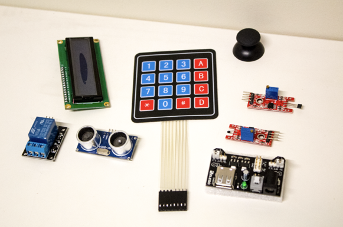 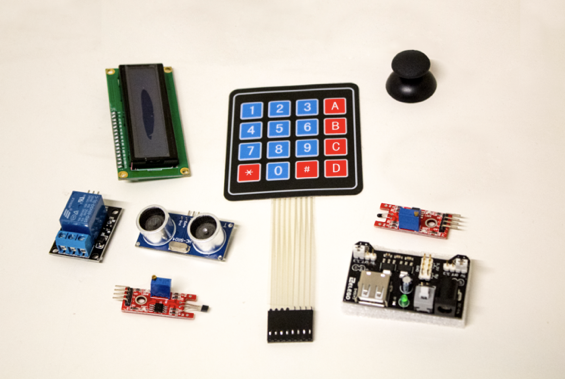
Overview
Photoshop is a powerful program. We will only be explaining only a few of the basics of how to use it. There are lots of tools we will not cover and you should feel free to play around with them! If you are interested in learning more advanced instructions check out the Adobe built in instructions, [tuts+](https://design.tutsplus.com/categories/adobe-photoshop), or [photoshopcafe](https://photoshopcafe.com/tutorials.htm)
Remember! Whenever you are photoshopping a prototype, it is important to be moral with your edits! Never change part of your prototype to fake functionality, and never make the it look better than you could achieve in real life.
The Tools
Let's go over a few of the basic tools that might be new to photoshop compared to commone drawing programs. Try them as we go through, and then play around with the rest to see what they do!
Moving Around
In addition to scrolling, you can use the hand tool to move the page around. The magnifying glass lets you zoom in and out. You might want to learn the keyboard shortcuts for these since you will be using them often.
On a Mac:
* hand tool: hold spacebar
* zoom in: space+command
* zoom out: space+alt/option
On Windows:
* hand tool: hold spacebar
* zoom in: spacebar+Ctrl
* zoom out: spacebar+Alt
Selection
Photoshop allows you select parts of images in lots of different ways. This is useful for moving them around or editting specific parts. Note the shortcuts under the Select menu for select all, inverse, and deselect, as you might be using these often.
Each type of selection tool brings a trade-off for how fast and easy it is to use versus how precise it is.
* Rectanglular/etc. Marquee Tool: Fast way to select a particular shape
* Lasso Tool: Select a free-form shape
* Polygonal Lasso Tool: Select a particular polygon. This is easier to control than the lasso tool.
* Magnetic Lasso Tool: Select the outside of a particular object and it will automatically try to snap to the border. This is a pretty cool tool for quickly selecting an object in an image, but it sometimes has trouble finding the correct border and can be a bit blurry in its selection.
* Quick Selection Tool: Drag your mouse around and it will select anything around it with similar colors. Useful for quickly selecting all of a white background, but might have trouble finding objects that blend into the background and might be fuzzy at the borders.
* Magic Wand Tool: Similar to the quick selection tool, but one point at a time, select regions nearby of similar colors.
A Few Other Useful Tools
* Eyedropper Tool: Select a color
* Spot Healing Brush Tool: Helps blend colors like backgrounds that were pasted together
* Healing Brush Tool: Same as above, but blends with colors selected somewhere else. Select those colors with the alt key.
* Patch Tool: Like the healing brush tool, but lets you do it over a large area. Select a region and slide it around to create nice blends
* Clone Stamp Tool: Lets you draw with colors identical to somewhere else on the page. Use alt to select an area and then stamp that somewhere else offset
Layers
Photoshop uses layers, which are very important to understand. Here is a quick guide to how they work. There is a layers tool bar probably somewhere on the side of your screen.
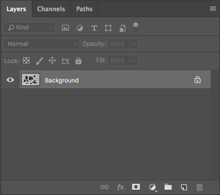
You can create new layers and do other useful things by clicking the 4 horizontal lines in the top right corner.
Layers allow you to do several things. They keep an inherant ordering of what is on top and what is below. You can also lock layers using the lock icon to prevent them from being changed as you edit other layers. You can turn their visibility on and off with the eye icon. When you are done making all the edits you want, you can flatten all of the layers together using 'flatten image'. However, it's probably best not to do this unless you need to to perfom some other action.
Walk Through
Now that we have gone over some of the basic tools and you have hopefully played around with them a bit, let's go through how you would edit an image.
Download the raw image here and follow along. TODO: link to download image
Here are our before and after images.
How did we get here? We did three things:
* Change the coloring
* Move one sensor
* Remove the border with the wall
Changing Color Contrast
When you open the raw image in photoshop (either by file/open or through simple drag and drop onto the workspace), a window should appear that will allow you to change all sorts of aspects about the image. Drag the sliders around until you are happy with what you have.
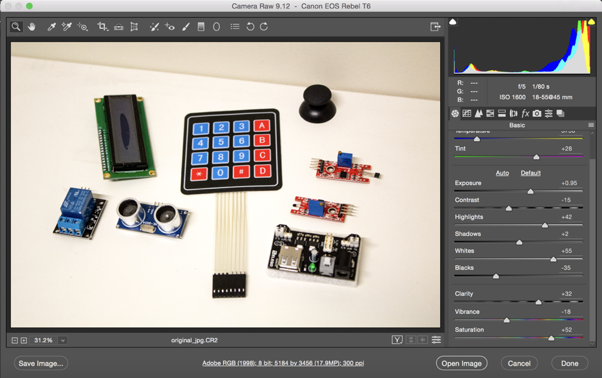
If you do not have the raw image, you can still change the coloring, but it is a bit harder. Use levels and curves from the adjustments menu.
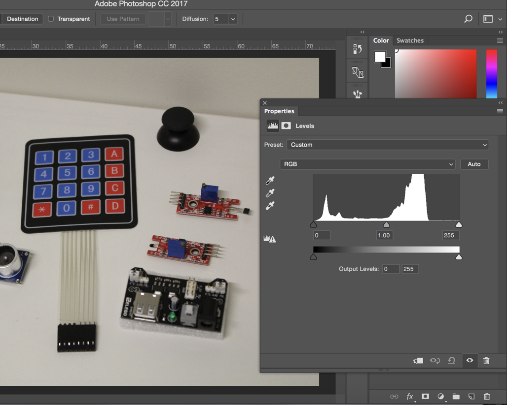
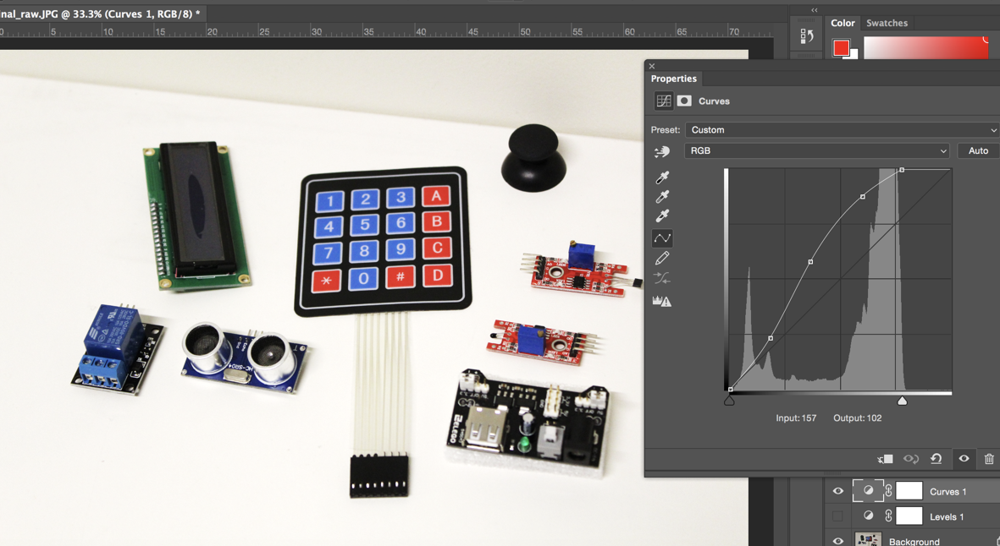
You can also easily turn these changes on and off in the layers menu by hitting the eye icon.
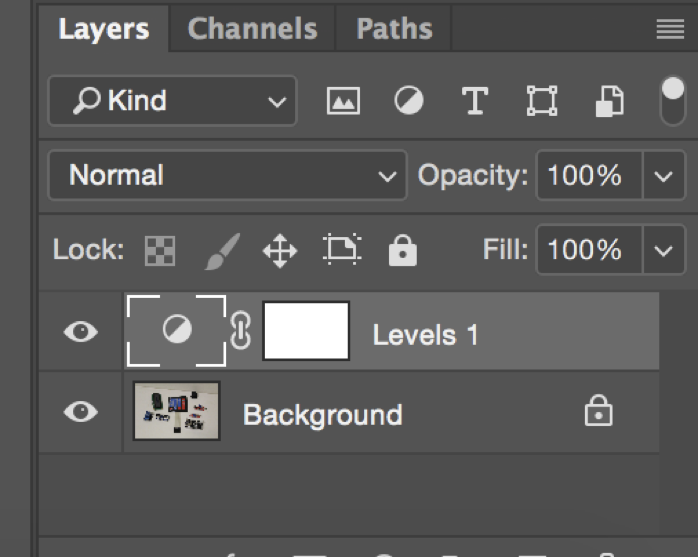
Moving a Sensor
Next, we are going to move the red sensor in the top right to the bottom left.
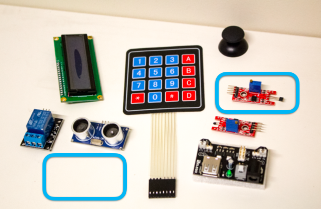
First, select the sensor with the lasso tool and move it.
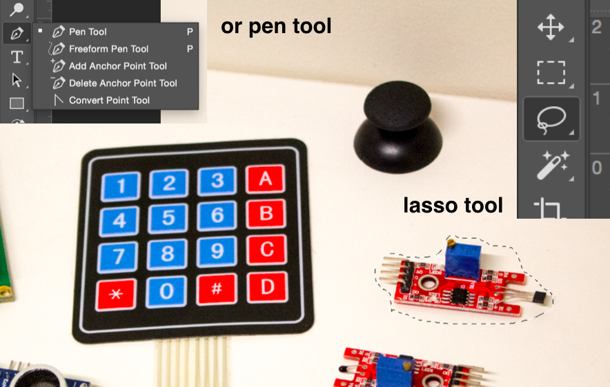
Now we're going to have to clean up two places: the white hole we left where the sensor used to be and the border between the sensor and the table where we moved it.
Take the clone stamp tool and alt-select a nice white region. Now stamp the areas that need smoothing.
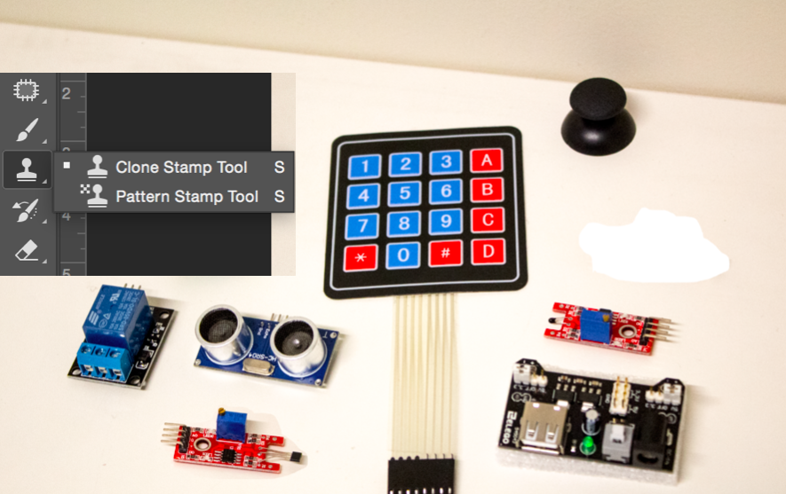
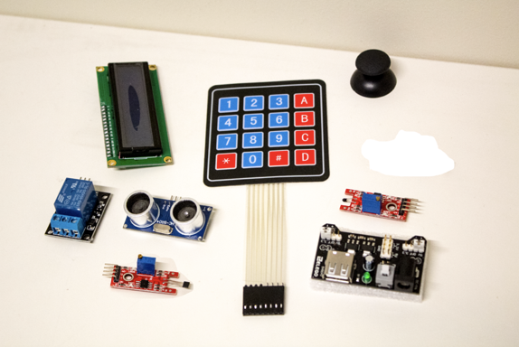
This still might look a bit blotchy. We can clean it up even more with the patch tool!
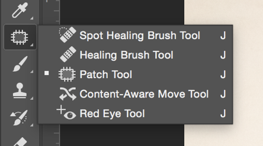
Play around with these two tools until everything looks nice and smooth.
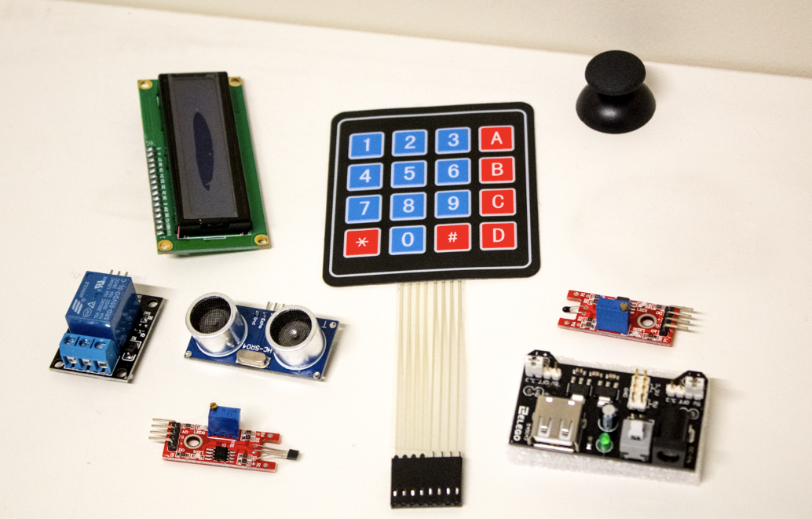
Removing the Wall
Next we want to remove the wall and make it look like the table continues to extend. We can actually do this in almost the exact same way we cleaned things up when we moved the sensor!
Use the clone stamp and the patch tools to remove the wall. Note that one place you might have trouble is up close to the joystick.If you select the area around the joystick, then your tools will only be able to effect the selected regions and the joystick will remain safe from harm.
Use your favorite selection method to select the white regions around the joystick while you are messing with that area. I recommend trying out the magnetic lasso tool.
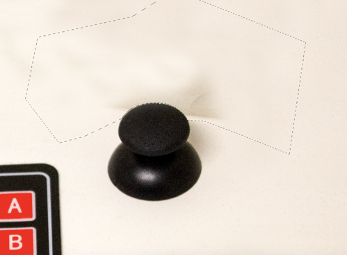
Eventually, you should get a nice clean image border, and you'll be done!
Work on your Midterm Presentation
Photo Taking and Editing